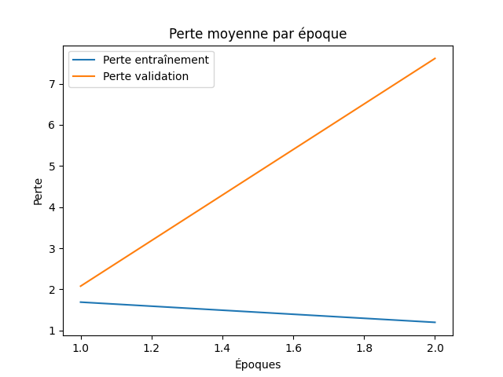
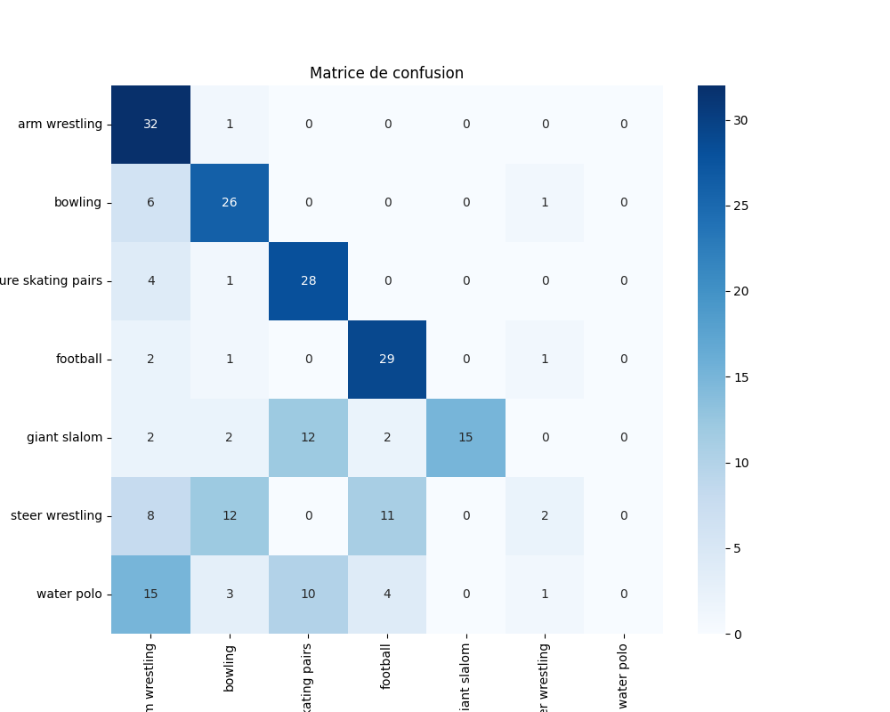
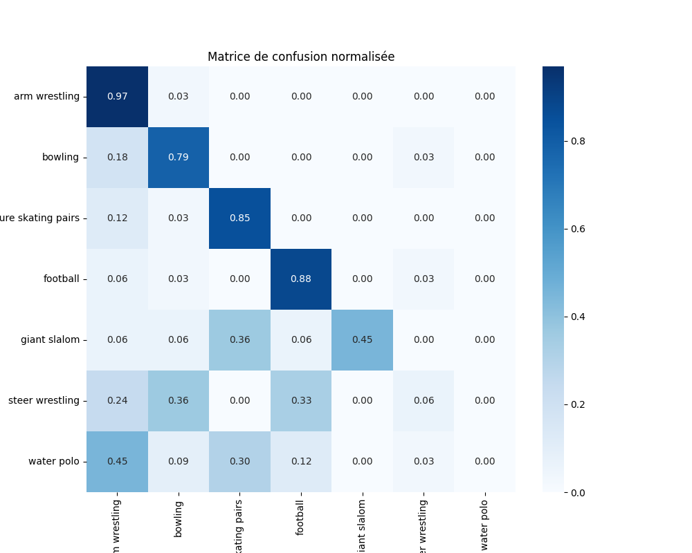
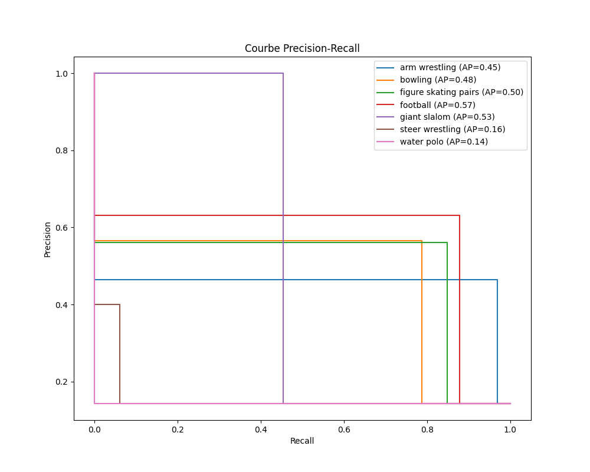

Rapport d'Évaluation du Modèle
Métriques
{
"accuracy": 0.5714285714285714,
"precision_weighted": 0.5170600414078675,
"recall_weighted": 0.5714285714285714,
"f1_score_weighted": 0.4892597138226794,
"cohen_kappa": 0.5,
"mcc": 0.5241649613652677,
"classification_report": {
"arm wrestling": {
"precision": 0.463768115942029,
"recall": 0.9696969696969697,
"f1-score": 0.6274509803921569,
"support": 33.0
},
"bowling": {
"precision": 0.5652173913043478,
"recall": 0.7878787878787878,
"f1-score": 0.6582278481012658,
"support": 33.0
},
"figure skating pairs": {
"precision": 0.56,
"recall": 0.8484848484848485,
"f1-score": 0.6746987951807228,
"support": 33.0
},
"football": {
"precision": 0.6304347826086957,
"recall": 0.8787878787878788,
"f1-score": 0.7341772151898734,
"support": 33.0
},
"giant slalom": {
"precision": 1.0,
"recall": 0.45454545454545453,
"f1-score": 0.625,
"support": 33.0
},
"steer wrestling": {
"precision": 0.4,
"recall": 0.06060606060606061,
"f1-score": 0.10526315789473684,
"support": 33.0
},
"water polo": {
"precision": 0.0,
"recall": 0.0,
"f1-score": 0.0,
"support": 33.0
},
"accuracy": 0.5714285714285714,
"macro avg": {
"precision": 0.5170600414078674,
"recall": 0.5714285714285714,
"f1-score": 0.48925971382267935,
"support": 231.0
},
"weighted avg": {
"precision": 0.5170600414078675,
"recall": 0.5714285714285714,
"f1-score": 0.4892597138226794,
"support": 231.0
}
}
}
Loss Curve.Png

Confusion Matrix.Png

Normalized Confusion Matrix.Png

Precision Recall Curves.Png
